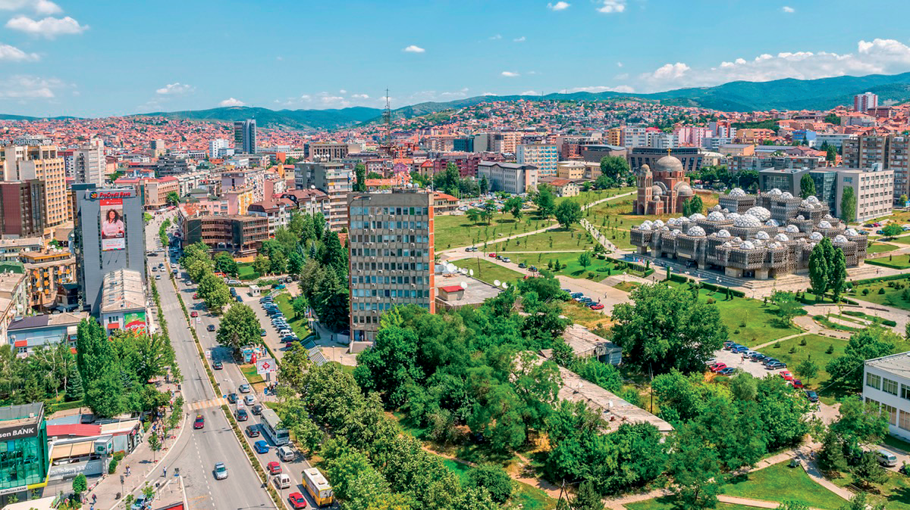

Traditat dhe trashëgimia jonë
Institucionet kulturore
Situata 1.
Fëmijët e klasës së katërt vizituan kryeqytetin e Kosovës, Prishtinën, së bashku me mësuesen e tyre. Gjatë kthimit për në qytetin e tyre, fëmijët po bashkëbisedonin me mësuesen për vendet që vizituan. Secili fëmijë po tregonte se çfarë i kishte bërë përshtypje.
Rronit i kishte bërë përshtypje Teatri i Kukullave, sepse për të koha aty ishte çlodhëse, e këndshme dhe shumë edukative.
Albanës i kishte bërë përshtypje shumë Muzeu i Kosovës. Aty ajo kishte mësuar më shumë për paraardhësit dhe historinë e popullit tonë.
Bora ishte mahnitur nga arkitektura e Bibliotekës Kombëtare dhe thoshte se mezi priste që të bëhej studente mjekësie e të lexonte aty.
Përshtypje fëmijëve u kishte bërë dhe Teatri Kombëtar, Galeria e Arteve e vendet e tjera që i kishin vizituar shkurt, por për secilën prej tyre kishin mësuar diçka të veçantë.
